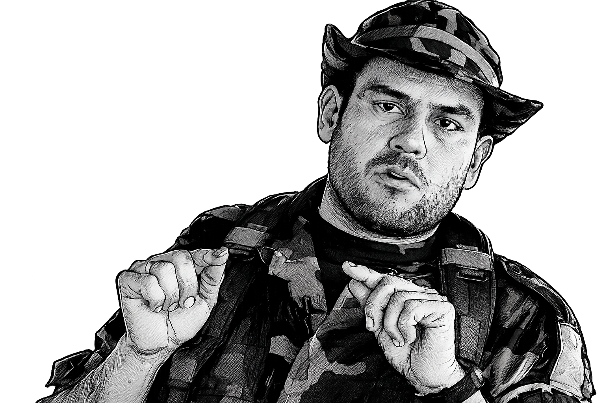

Carlos Castaño Gil fue un líder paramilitar colombiano nacido el 16 de mayo de 1965 en Amalfi, Antioquia. Es recordado por haber sido uno de los fundadores y principales comandantes de las Autodefensas Unidas de Colombia (AUC), organización que agrupó a varios grupos paramilitares que operaban en diferentes regiones del país. Su participación en el conflicto armado colombiano estuvo marcada por la lucha contra las guerrillas, especialmente las FARC y el ELN. Según diferentes versiones, su vinculación a los grupos de autodefensa comenzó después del secuestro y asesinato de su padre por parte de las FARC. Junto con sus hermanos, inició actividades armadas que con el tiempo dieron origen a organizaciones paramilitares cada vez más grandes y mejor organizadas. Durante la década de 1990, Carlos Castaño se convirtió en una de las figuras más influyentes y polémicas del conflicto colombiano. Las AUC fueron responsables de numerosas acciones armadas y también fueron señaladas por organismos nacionales e internacionales por graves violaciones a los derechos humanos, incluyendo masacres, desplazamientos forzados y asesinatos de civiles. Además, varias investigaciones relacionaron a miembros de estas organizaciones con actividades de narcotráfico. A comienzos de los años 2000 surgieron conflictos internos dentro de las AUC. Las diferencias entre Castaño y otros jefes paramilitares aumentaron hasta que en abril de 2004 desapareció. Posteriormente, las investigaciones determinaron que había sido asesinado por integrantes de la misma organización. Su figura sigue siendo una de las más controvertidas de la historia reciente de Colombia debido al impacto que tuvo en el desarrollo del conflicto armado.
